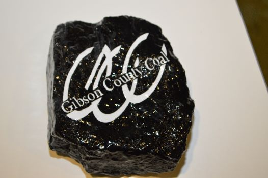

Welcome to CEDAR!
CEDAR's Mission
Our mission is to provide information and educational activities related to coal and energy for educators, students as well as the general public.
We provide opportunities to gain a deeper understanding of the importance of coal and the energy it produces.
CEDAR Indiana provides opportunities through
- Hands on educational experiences like Coal Days
- Guest Speakers and Presentations from Industry Experts
- Information and Educational Materials
- Teacher Coal Study Unit Grants

CEDAR's Target Group
Hoosiers who have an interest in coal and energy production including Indiana's K-12 students and educators of both public and private schools.
CEDAR's Goal
CEDAR’s Goal is to expand Hoosiers knowledge energy production and the Indiana Coal Industry